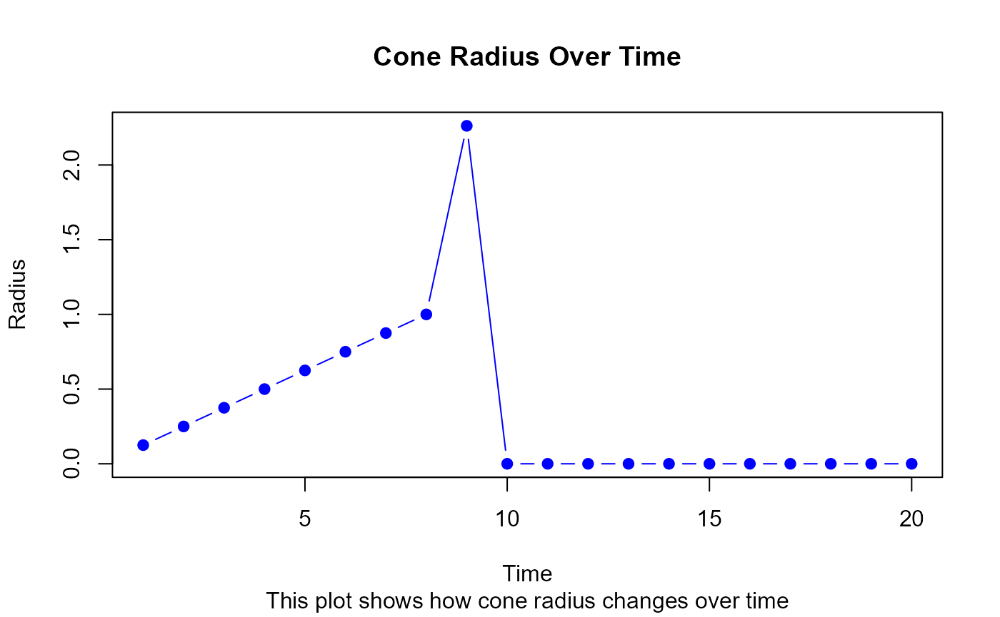
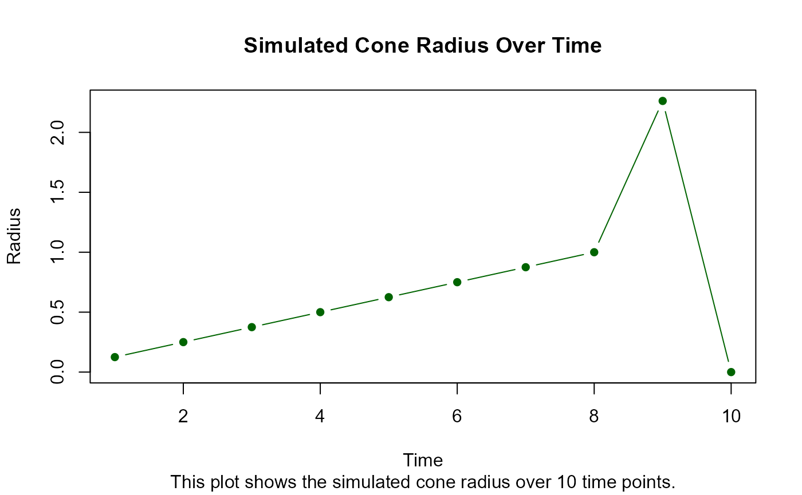

tutorial.RmdThis tutorial demonstrates how to use the
bpartyRonyLittle package for weather forecasting and
simulating ice cream consumption. The package combines weather data and
simulation tools to estimate ice cream volume for fun and practical use
cases.
First, install the package from GitHub using the
devtools package:
# Install the package
devtools::install_github("ptds2024/bpartyRonyLittle")## Using GitHub PAT from the git credential store.## Skipping install of 'bpartyRonyLittle' from a github remote, the SHA1 (32538a2f) has not changed since last install.
## Use `force = TRUE` to force installationLoad the package:
library(bpartyRonyLittle)The bpartyRonyLittle package retrieves weather data using the OpenWeatherMap API.
You can verify if a city is available in the API database using the check_city_validity function:
# Check if Lausanne is a valid city
api_key <- "388c46f24ed4124776271a0d7e62bbb1"
is_valid <- check_city_validity("Lausanne", api_key = api_key)
print(is_valid)## [1] TRUEUse the get_forecast function to get detailed weather information for the next 5 days:
# Fetch weather data for Lausanne
forecast <- get_forecast("Lausanne", api_key = api_key)
head(forecast)## $cod
## [1] "200"
##
## $message
## [1] 0
##
## $cnt
## [1] 40
##
## $list
## dt main.temp main.feels_like main.temp_min main.temp_max
## 1 1731790800 7.99 6.37 7.99 9.13
## 2 1731801600 8.12 6.34 8.12 8.47
## 3 1731812400 8.18 6.43 8.18 8.18
## 4 1731823200 7.98 6.03 7.98 7.98
## 5 1731834000 10.19 9.12 10.19 10.19
## 6 1731844800 13.07 11.97 13.07 13.07
## 7 1731855600 12.71 11.71 12.71 12.71
## 8 1731866400 9.72 8.39 9.72 9.72
## 9 1731877200 8.58 7.19 8.58 8.58
## 10 1731888000 8.34 6.69 8.34 8.34
## 11 1731898800 8.14 6.24 8.14 8.14
## 12 1731909600 7.10 4.82 7.10 7.10
## 13 1731920400 8.67 6.79 8.67 8.67
## 14 1731931200 10.39 9.23 10.39 10.39
## 15 1731942000 10.59 9.43 10.59 10.59
## 16 1731952800 9.17 6.76 9.17 9.17
## 17 1731963600 7.84 5.27 7.84 7.84
## 18 1731974400 7.74 5.02 7.74 7.74
## 19 1731985200 8.78 5.98 8.78 8.78
## 20 1731996000 8.57 5.54 8.57 8.57
## 21 1732006800 8.39 4.22 8.39 8.39
## 22 1732017600 9.47 5.73 9.47 9.47
## 23 1732028400 9.29 5.56 9.29 9.29
## 24 1732039200 9.48 5.33 9.48 9.48
## 25 1732050000 5.41 2.37 5.41 5.41
## 26 1732060800 5.18 3.33 5.18 5.18
## 27 1732071600 3.79 0.40 3.79 3.79
## 28 1732082400 2.61 -0.28 2.61 2.61
## 29 1732093200 3.18 0.84 3.18 3.18
## 30 1732104000 4.39 0.86 4.39 4.39
## 31 1732114800 3.16 -0.21 3.16 3.16
## 32 1732125600 1.22 -2.02 1.22 1.22
## 33 1732136400 1.35 -2.64 1.35 1.35
## 34 1732147200 0.82 -3.34 0.82 0.82
## 35 1732158000 0.05 -4.35 0.05 0.05
## 36 1732168800 1.22 -4.00 1.22 1.22
## 37 1732179600 2.50 -1.70 2.50 2.50
## 38 1732190400 3.06 0.30 3.06 3.06
## 39 1732201200 1.06 -0.56 1.06 1.06
## 40 1732212000 0.86 -1.55 0.86 0.86
## main.pressure main.sea_level main.grnd_level main.humidity main.temp_kf
## 1 1020 1020 962 69 -1.14
## 2 1020 1020 961 72 -0.35
## 3 1019 1019 960 76 0.00
## 4 1018 1018 960 77 0.00
## 5 1019 1019 961 71 0.00
## 6 1017 1017 960 59 0.00
## 7 1016 1016 958 64 0.00
## 8 1017 1017 959 74 0.00
## 9 1019 1019 960 80 0.00
## 10 1019 1019 960 80 0.00
## 11 1018 1018 960 80 0.00
## 12 1018 1018 959 84 0.00
## 13 1018 1018 960 77 0.00
## 14 1017 1017 959 67 0.00
## 15 1016 1016 958 66 0.00
## 16 1016 1016 958 71 0.00
## 17 1016 1016 958 78 0.00
## 18 1014 1014 956 80 0.00
## 19 1012 1012 954 76 0.00
## 20 1010 1010 952 81 0.00
## 21 1010 1010 952 90 0.00
## 22 1007 1007 950 81 0.00
## 23 1004 1004 947 83 0.00
## 24 1003 1003 946 88 0.00
## 25 1010 1010 951 80 0.00
## 26 1008 1008 950 75 0.00
## 27 1007 1007 948 84 0.00
## 28 1008 1008 948 81 0.00
## 29 1010 1010 950 67 0.00
## 30 1009 1009 950 59 0.00
## 31 1010 1010 951 61 0.00
## 32 1012 1012 952 73 0.00
## 33 1013 1013 953 99 0.00
## 34 1014 1014 954 89 0.00
## 35 1014 1014 954 95 0.00
## 36 1014 1014 954 84 0.00
## 37 1012 1012 952 75 0.00
## 38 1006 1006 947 67 0.00
## 39 999 999 940 98 0.00
## 40 998 998 939 100 0.00
## weather all wind.speed wind.deg wind.gust
## 1 802, Clouds, scattered clouds, 03n 46 2.60 246 3.57
## 2 802, Clouds, scattered clouds, 03n 38 2.86 241 3.97
## 3 800, Clear, clear sky, 01n 5 2.84 238 3.92
## 4 800, Clear, clear sky, 01n 6 3.08 241 4.31
## 5 800, Clear, clear sky, 01d 6 3.59 246 4.96
## 6 801, Clouds, few clouds, 02d 17 4.93 237 5.70
## 7 804, Clouds, overcast clouds, 04d 91 5.11 250 5.99
## 8 804, Clouds, overcast clouds, 04n 95 2.65 280 3.51
## 9 804, Clouds, overcast clouds, 04n 99 2.44 285 3.05
## 10 804, Clouds, overcast clouds, 04n 99 2.74 260 3.35
## 11 803, Clouds, broken clouds, 04n 77 3.06 258 3.73
## 12 803, Clouds, broken clouds, 04n 81 3.32 264 3.81
## 13 804, Clouds, overcast clouds, 04d 100 3.20 253 3.82
## 14 804, Clouds, overcast clouds, 04d 100 4.78 239 5.11
## 15 804, Clouds, overcast clouds, 04d 100 5.11 234 5.73
## 16 804, Clouds, overcast clouds, 04n 99 4.49 250 5.23
## 17 804, Clouds, overcast clouds, 04n 98 4.15 251 5.14
## 18 804, Clouds, overcast clouds, 04n 99 4.42 246 5.76
## 19 804, Clouds, overcast clouds, 04n 100 5.21 236 7.74
## 20 500, Rain, light rain, 10n 100 5.68 231 8.90
## 21 500, Rain, light rain, 10d 100 9.40 230 13.31
## 22 500, Rain, light rain, 10d 100 9.04 215 15.49
## 23 500, Rain, light rain, 10d 100 8.74 206 15.72
## 24 501, Rain, moderate rain, 10n 100 10.91 228 17.83
## 25 501, Rain, moderate rain, 10n 100 3.99 190 4.53
## 26 500, Rain, light rain, 10n 97 2.26 255 3.66
## 27 803, Clouds, broken clouds, 04n 75 3.95 275 5.48
## 28 600, Snow, light snow, 13n 88 2.89 327 3.58
## 29 600, Snow, light snow, 13d 100 2.40 337 3.34
## 30 600, Snow, light snow, 13d 98 4.45 286 5.27
## 31 500, Rain, light rain, 10d 23 3.70 300 4.95
## 32 600, Snow, light snow, 13n 51 2.98 294 3.84
## 33 601, Snow, snow, 13n 100 4.03 238 5.50
## 34 601, Snow, snow, 13n 99 4.10 265 4.69
## 35 600, Snow, light snow, 13n 72 4.19 253 5.91
## 36 600, Snow, light snow, 13n 84 6.21 237 9.30
## 37 500, Rain, light rain, 10d 100 4.84 234 7.16
## 38 804, Clouds, overcast clouds, 04d 100 2.85 240 4.82
## 39 601, Snow, snow, 13d 100 1.51 6 2.83
## 40 602, Snow, heavy snow, 13n 100 2.08 5 1.05
## visibility pop pod dt_txt 3h 3h
## 1 10000 0.00 n 2024-11-16 21:00:00 NA NA
## 2 10000 0.00 n 2024-11-17 00:00:00 NA NA
## 3 10000 0.00 n 2024-11-17 03:00:00 NA NA
## 4 10000 0.00 n 2024-11-17 06:00:00 NA NA
## 5 10000 0.00 d 2024-11-17 09:00:00 NA NA
## 6 10000 0.00 d 2024-11-17 12:00:00 NA NA
## 7 10000 0.00 d 2024-11-17 15:00:00 NA NA
## 8 10000 0.00 n 2024-11-17 18:00:00 NA NA
## 9 10000 0.00 n 2024-11-17 21:00:00 NA NA
## 10 10000 0.00 n 2024-11-18 00:00:00 NA NA
## 11 10000 0.00 n 2024-11-18 03:00:00 NA NA
## 12 10000 0.00 n 2024-11-18 06:00:00 NA NA
## 13 10000 0.00 d 2024-11-18 09:00:00 NA NA
## 14 10000 0.00 d 2024-11-18 12:00:00 NA NA
## 15 10000 0.00 d 2024-11-18 15:00:00 NA NA
## 16 10000 0.00 n 2024-11-18 18:00:00 NA NA
## 17 10000 0.00 n 2024-11-18 21:00:00 NA NA
## 18 10000 0.00 n 2024-11-19 00:00:00 NA NA
## 19 10000 0.00 n 2024-11-19 03:00:00 NA NA
## 20 10000 0.66 n 2024-11-19 06:00:00 0.62 NA
## 21 8593 1.00 d 2024-11-19 09:00:00 2.08 NA
## 22 10000 1.00 d 2024-11-19 12:00:00 2.67 NA
## 23 10000 1.00 d 2024-11-19 15:00:00 2.90 NA
## 24 5320 1.00 n 2024-11-19 18:00:00 6.67 NA
## 25 10000 1.00 n 2024-11-19 21:00:00 6.57 NA
## 26 10000 1.00 n 2024-11-20 00:00:00 0.44 NA
## 27 10000 0.00 n 2024-11-20 03:00:00 NA NA
## 28 10000 0.34 n 2024-11-20 06:00:00 NA 0.29
## 29 10000 0.41 d 2024-11-20 09:00:00 NA 0.30
## 30 10000 0.60 d 2024-11-20 12:00:00 NA 0.61
## 31 10000 0.34 d 2024-11-20 15:00:00 0.26 NA
## 32 8736 0.39 n 2024-11-20 18:00:00 NA 0.36
## 33 622 1.00 n 2024-11-20 21:00:00 NA 3.28
## 34 10000 1.00 n 2024-11-21 00:00:00 NA 4.12
## 35 309 1.00 n 2024-11-21 03:00:00 NA 1.13
## 36 10000 0.98 n 2024-11-21 06:00:00 NA 0.92
## 37 10000 0.20 d 2024-11-21 09:00:00 0.10 NA
## 38 10000 0.00 d 2024-11-21 12:00:00 NA NA
## 39 180 1.00 d 2024-11-21 15:00:00 NA 4.47
## 40 91 1.00 n 2024-11-21 18:00:00 NA 16.23
##
## $city
## $city$id
## [1] 2659994
##
## $city$name
## [1] "Lausanne"
##
## $city$coord
## $city$coord$lat
## [1] 46.516
##
## $city$coord$lon
## [1] 6.6328
##
##
## $city$country
## [1] "CH"
##
## $city$population
## [1] 116751
##
## $city$timezone
## [1] 3600
##
## $city$sunrise
## [1] 1731739039
##
## $city$sunset
## [1] 1731772773The package includes functions to calculate the radius of an ice cream cone over time and simulate its changes.
The cone_radius function computes the radius of a cone based on the given input x:
# Calculate the radius for a single time point
radius <- cone_radius(5)
print(radius)## [1] 0.625
# Calculate the radius for a sequence of time points
radii <- cone_radius_for(1:10)
print(radii)## [1] 0.125000 0.250000 0.375000 0.500000 0.625000 0.750000 0.875000 1.000000
## [9] 2.262206 0.000000You can visualize how the cone’s radius changes over time:
# Plot cone radius over time
radii <- cone_radius_for(1:20)
plot(1:20, radii, type = "b", col = "blue", pch = 19,
main = "Cone Radius Over Time",
xlab = "Time", ylab = "Radius",
sub = "This plot shows how cone radius changes over time")
The package includes a Shiny app for interactive weather and ice cream analysis. Use the run_app function to launch the app:
# Launch the Shiny app
run_app(api_key = api_key)Here’s a complete example workflow that combines weather data retrieval and cone volume simulation:
# Step 1: Verify the city
is_valid <- check_city_validity("Lausanne", api_key = api_key)
if (!is_valid) stop("City not found!")
# Step 2: Fetch weather data
forecast <- get_forecast("Lausanne", api_key = api_key)
# Step 3: Simulate cone radius over 10 time points
radii <- cone_radius_for(1:10)
# Step 4: Plot results
plot(1:10, radii, type = "b", col = "darkgreen", pch = 16,
main = "Simulated Cone Radius Over Time",
xlab = "Time", ylab = "Radius",
sub = "This plot shows the simulated cone radius over 10 time points.")